|
PVFS2 High-Availability Clustering
PVFS2 Development Team
June, 2004
We designed PVFS2 with performance in mind. Software redundancy, while
appealing for its cost and reliability, has a substantial impact on
performance. While we are thinking how best to design software
redundancy, there will always be a performance cost. Hardware-based
failover is one way to achieve resistance to failures while maintaining
high performance. This document outlines how we set up a PVFS2
high-availability cluster using free software. First we will walk
through setting up an active-passive system, then show what needs to be
changed for a full active-active failover configuration.
Please send updates, suggestions, corrections, and especially any
notes for other Linux distributions to
pvfs2-developers@beowulf-underground.org
The whole point of failover is for one computer to take over the job of
another if and when it dies (component failure, power cord unplugged,
etc.). The easiest way to achieve that is to have two
identical machines with some sort of shared storage between them.
Here's the hardware we used:
- 2 Dell PowerEdge 2650s,
each with a PERC (PowerEdge Raid Controller) card
and 4 70 GB disks configured in RAID-5
- 1 Dell PowerVault 220s
with 7 160 GB disks configured in RAID-5
It's conceivable that a Fibre Channel or Firewire drive would suffice for
the shared storage device. Reports of success or failure using such
devices would be most welcome.
Some preliminary notes about installing Linux (Debian) on this hardware:
- We went with Debian on this system. We figured if the software worked
on Debian, it would work on any distribution. People who set this up
on other systems and had to do anything differently, please send
updates.
- Debian's ``woody'' boot floppies don't recognize megaraid (PERC)
hardware raid, so we used the new debian-installer. NOTE:
debian-installer test candidate 1 had a bug in base-system, so use
debian-installer beta 4 instead. By the time you read this,
debian-installer will probably be fixed, but beta 4 is known to work
on this hardware.
- Once Debian is installed, build a new kernel. You can use
linux-2.4 or linux-2.6. The failover tools we describe in this
document are userspace applications and work equally well with 2.4 and
2.6. With linux-2.4, make sure to compile in support for
AIC_7XXX and MEGARAID2 scsi drivers. There are
both a MEGARAID and a MEGARAID2; we need megaraid2.
The megaraid2 driver eventually made its way into linux-2.6. Be sure
to run linux-2.6.9-rc2 or newer, and set
CONFIG_MEGARAID_NEWGEN (in menuconfig, ``LSI Logic New
Generation RAID Device Drivers (NEW)''),
CONFIG_MEGARAID_MM, and CONFIG_MEGARAID_MAILBOX
- Put the PowerVault enclosure in cluster mode. To do so,
flip the little switch on the back of the PowerVault to the position
with the linked SCSI symbols. This is different from putting the
controller into cluster mode, which you must also do and is described
later on.
- Turn on the storage and the servers at about the same time or
weird delays happen
- There were two SCSI cards in the back of the PowerEdge. I plugged the
PowerVault into the 2nd (top) card, channel 1.
- There are some command-line tools you can download from Dell's
site to configure storage volumes under Linux, but they are unable to
do things like enabling "cluster mode" and changing SCSI id numbers.
Also, they don't work so hot at configuring storage volumes, but that
could have just been because the PowerVault was in a weird state.
Still, it's probably best to set up the PowerVault from the BIOS as
outlined below and avoid the command-line tools if possible.
- Instead of using the command-line tools, configure through the
bios: hit Ctrl-M when on bootup when prompted to do so. Once in the
setup program, enable cluster mode:
Objects 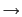 Adapter Cluster Mode
Enabled. Also disable the PERC BIOS: that's in the Objects
Adapter menu too. See the manual for more things you
can tweak. The utility lists all the important keystrokes at the
bottom of the screen. Not exactly intuitive, but at least they are
documented. For more information, see
http://docs.us.dell.com/docs/storage/perc3dc/ug/en/index.htm ,
particularly the ``BIOS Configuration Utility'' chapter.
- If toggle on the back of the PowerVault is in cluster mode, and you
haven't disabled the PERC BIOS and put the NVRAM into cluster mode,
``weird stuff'' happens. I'm not really sure what i did to make it go
away, but it involved a lot of futzing around with cables and that
toggle on the back and rebooting nodes.
- The GigE chips in the PowerEdge machines don't need a crossover cable:
they'll figure out how to talk to each other if you plug a
straight-through or crossover cable between them. I'm going to say
``crossover cable'' a lot in this document out of habit. When I say
``crossover'' I mean ``either crossover or straight-through''.
- Node failover has one particularly sticky corner case that can
really mess things up. If one node (A) thinks the other (B) died, A
will start taking over B's operations. If B didn't actually die, but
just got hung up for a time, it will continue as if everything is OK.
Then you have both A and B thinking they control the file system,
both will write to it, and the result is a corrupted file system. A
100% legitimate failover configuration would take measures so that
one node can ``fence'' a node - ensure that it will not attempt to
access the storage until forgetting all state. The most common way to
do so is to Shoot The Other Node In The Head (STONITH), and the most
common way to STONITH is via network-addressable power supplies. You
can get away without a STONITH mechanism, and we're going to outline
just such a configuration, but just because you can do something
doesn't mean you necessarily should do it.
- NOTE: the heartbeat software will set up IP addresses and mount file
systems. The nodes will have a private (192.168.1.x) address for
heartbeat, a fixed IP address for maintenance, and one or two
'cluster' IP addresses which heartbeat will bind to an aliased
interface. Be sure that your shared file system is not in /etc/fstab
and your network configuration scripts do not bring up the shared
cluster IP addresses.
Partition and make a file system on the PowerVault. If you're going to
set up Active-Active, make two partitions, else make one. Mount the
filesystem somewhere, but don't add an entry to /etc/fstab: heartbeat
will take care of mounting it once you have things set up, and we are
mounting the file system just long enough to put a PVFS2 storage space
on it. Reboot the other node to make sure it sees the new partition
information on the enclosure.
Download, build, install, and configure PVFS2. PVFS2 can work in a
failover environment as long as the clients and servers are version
0.5.0 or newer (Version 0.5.0 introduced the ability to retry failed
operations). In this document, we have configured both PVFS2 server to
act as both a Metadata and a Data server. Since the config files and
storage device are shared between both nodes of this cluster, it is not
strictly necessary to configure the servers for both roles. Create a
storage space on the PowerVault filesystem. Now shutdown PVFS2 and
unmount the file system.
There are two main failover packages. I went with heartbeat from
linux-ha.org. There is another package called ``kimberlite'', but it
seems to have bitrotted. While it has excellent documentation, it
requires a 'quorum' partition, which the two nodes will write to using
raw devices. At some point, something scrambled the main (not raw)
partition, so I gave up on kimberlite.
Heartbeat seems to work pretty well, once you can wrap your head around
the config file.
NOTE: There is a newer version of heartbeat that uses XML-based config
files. The new version also understands older config files, so the
information in this document should still work. When using XML-based
config files, however, heartbeat can provide a lot of additional
features. The older config files are left here for historical purposes
until we add XML config files at some point in the future.
The two nodes are configured as in Figure 1. They have a
private internal network for heartbeat, and a public IP address so
people can log into them and perform maintenance tasks.
Figure 1:
Simplified wiring diagram of a PVFS2 HA cluster
|
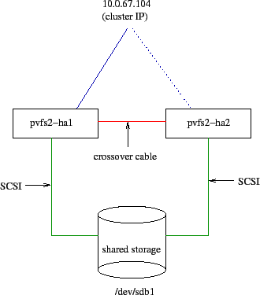
|
There is a shared "cluster" IP address which is assigned to whichever
node is active.
Follow GettingStarted.{txt,html} to set up haresources and ha.cf.
Heartbeat ships with a heavily commented set of config files:
- ha.cf: configures the heartbeat infrastructure itself.
- haresources: describes the actual resources which will migrate
from node to node. 'Resources' includes IP address, file system
partition, and service.
- authkeys: sets up an authentication mechanism between two nodes.
Copy the ha.cf, haresources, and authkeys files shipped with heartbeat
to the /etc/ha.d directory and edit them. The defaults are pretty
reasonable to get started. For a simple active-passive system
there are only a few settings you need to adjust: see
Figure 2, Figure 3, and
Figure 4 for examples.
Figure 2:
Minimal /etc/heartbeat/ha.cf file
| 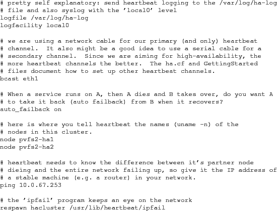 |
Figure 3:
Minimal /etc/heartbeat/haresources file
| 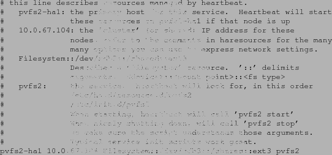 |
Figure 4:
Example /etc/heartbeat/authkeys file
| 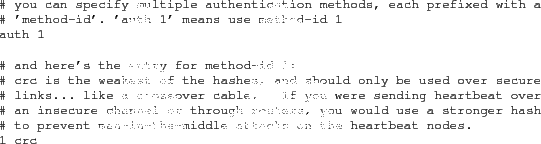 |
Figure 5:
ifconfig output with an aliased interface. eth0:0 is
an aliased interface for eth0. eth1 is a heartbeat channel,
over which both nodes in the cluster can communicate their status to each
other
| 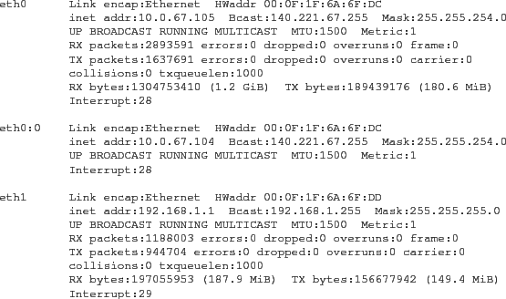 |
Now you've got heartbeat configured and you've described the resources.
Fire up the ``heartbeat'' daemon (/etc/init.d/heartbeat start) on one
node and see if all the resources start up (you should see an aliased
interface bound to the cluster ip (see Figure 5), the file system mounted, and the
pvfs2 servers running).
Ping the cluster IP from another machine. If something is broken,
consult the /var/log/ha-log file or /var/log/syslog and see if any of
the scripts in /etc/ha.d/resource.d failed.
As the GettingStarted document puts it, if all goes well, you've got
Availability (PVFS2 running on one node). Verify by running pvfs2-ping
or pvfs2-cp or mounting the PVFS2 file system from a client (not the
servers: we're going to reboot them soon to test). Now start heartbeat
on the standby server. Make sure that the IP address, the file system,
and pvfs2 did not migrate to the standby node - if you were to use the
haresources file in Figure 3, the output of
ifconfig should still look like Figure 5, you
would still have /dev/sdb3 mounted on /shared, and pvfs2-server would
still be running.
OK, the moment of truth. Everything is in place: node A serving PVFS2
requests, node B ready to step in. Start a long-running process on the
client (pvfs2-cp of a large file will work, as will unpacking a tarball
onto a PVFS2 file system). Kill node A somehow: you could be as brutal
as pulling the power cable, or as gentle as /etc/init.d/heartbeat stop.
As the heartbeat docs note, don't just pull the network cables out: the
heartbeat process on both nodes will assume the other process died and
will attempt to recover. Remember that ``takeover'' means taking over
the IP address, file system, and programs, so you will have two nodes
writing to the same file system and trying to share the same ip address.
When you plug the network cables back in, you will have network
collisions and simultaneous writes to the filesystem. Yes this is
different from stopping heartbeat and starting it up later: when
heartbeat starts, it checks to see the state of its partner node, and
will do the right thing.
If the failover works correctly, heartbeat will migrate everything to
node B, and the client won't notice a thing. Congratulations, you've
got High Availability. To finish, bring A back up. The resources which
were on node B will migrate back to node A (if you set
auto_failback to 'on' in ha.cf), and the client remains
oblivious.
Figure 6:
Simplified wiring diagram of a PVFS2 HA cluster, Active-Active
configuration
|
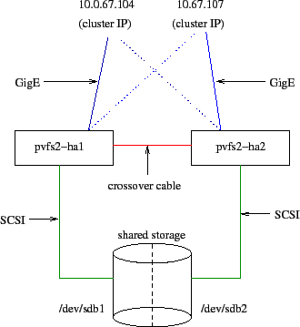
|
If that wasn't exciting enough, we can do active-active, too. It's
pretty much like active-passive, except both nodes are pvfs2 servers.
Instead of sharing one cluster IP, there will be two - one for each
server. Instead of sharing one file system, there will be two. If A
dies, B will serve it's data and A's data, and vice versa. You get all
the benefits of Active-Passive, but you don't have a server waiting idly
for a (hopefully rare) failure. Figure 6 depicts an
Active-Active cluster.
As mentioned above, you'll need two partitions on the shared storage and
two shared IP addresses. configure PVFS2 on the two servers as you
normally would, using the shared IP address. Make sure both servers
have both server-specific config files. When one node dies, you'll have
two instances of pvfs2-server running on a node, so you need to make
some tweaks to the config file to ensure that can happen:
- delete the LogFile entry from fs.conf
- add a LogFile entry to the server-specific config file, making
sure each server gets a different log file
- the StorageSpace for each server must point to its own
partition on the shared device.
- the HostID for each server must point to a unique port number.
- the Alias entry in the fs.conf must also match the HostID in
the server-specific config file (make sure the port numbers
match)
Heartbeat looks for startup/shutdown scripts in /etc/init.d and
/etc/ha.d/resources.d . Since we need to be able to, in the worst case,
start up two pvfs2-servers, we'll need two scripts. No sense
polluting /etc/init.d: go ahead and create pvfs2-1 and pvfs2-2 in the
resources.d directory. PVFS2 has an example script in
examples/pvfs2-server.rc you can use to start. Make sure PVFS2_FS_CONF
and PVFS2_SERVER_CONF point to the proper config files (it will guess
the wrong ones if you don't specify them) and PVFS2_PIDFILE is different
in both scripts. See Figure 7 and
Figure 8.
Figure 7:
Excerpt from PVFS2 init script on one A-A node
| 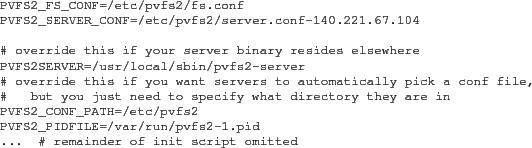 |
Figure 8:
Excerpt from PVFS2 init script on the other A-A node
| 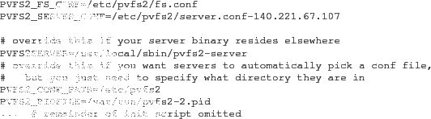 |
Figure 9:
haresources file, Active-Active configuration
| 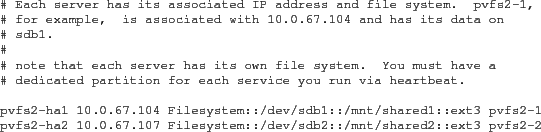 |
The ha.cf file looks the same in A-A as it does in A-P, as does the
authkeys. We only have to add an entry to haresources indicating that
heartbeat needs to manage two separate resources. See
Figure 9.
Start heartbeat on both machines. See if a client can reach the servers
(e.g. pvfs2-ping). Kill a machine. The resources that were on that
machine (IP address, file system, pvfs2-servers) will migrate to the
machine that is still up. Clients won't notice a thing.
Figure 10 shows node A after node B goes down. Node A
now has both of the two cluster IP addresses bound to two aliased
interfaces B while continuing to manage it's default resource.
Figure 10:
ifconfig output. This node now has both cluster IP
addresses .
| 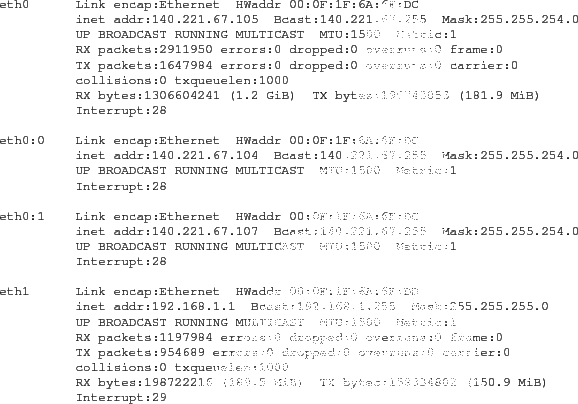 |
We would like to thank Jasmina Janic for notes and technical support.
The Dell Scalable Systems Group loaned the PVFS2 development team Dell
hardware. With this hardware, we were able to evaluate several high
availability solutions and verify PVFS2's performance in that
environment. This document would not be possible without their
assistance.
PVFS2 High-Availability Clustering
This document was generated using the
LaTeX2HTML translator Version 2002-2-1 (1.71)
Copyright © 1993, 1994, 1995, 1996,
Nikos Drakos,
Computer Based Learning Unit, University of Leeds.
Copyright © 1997, 1998, 1999,
Ross Moore,
Mathematics Department, Macquarie University, Sydney.
The command line arguments were:
latex2html -split 0 -show_section_numbers -nonavigation -init_file /tmp/pvfs-2.8.2/doc/latex2html-init pvfs2-ha.tex
The translation was initiated by Samuel Lang on 2010-02-04
Samuel Lang
2010-02-04
|